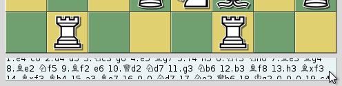

The overview browser is opened with a game from a game list and stays bound to that list. If the list is closed while the browser is open, no further game can be loaded.
The browser divides the game into roughly equal intervals and shows the positions side by side. The number of positions depends on the screen size and the selected tab. Below each position are the moves that led to it, so the last board shows the final position. When not all moves fit, scroll the text with the mouse wheel, or drag it with the left mouse button held down.

The context menu of the overview browser offers:
The buttons load the previous or next game, close the browser (also with Esc) and open this help page (also with F1).